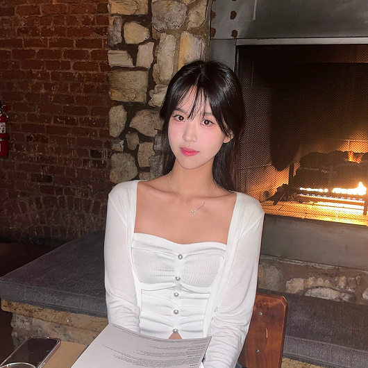
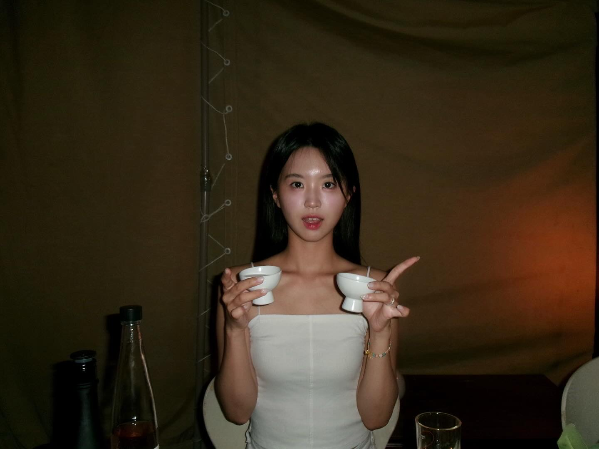

Hi there 👋
Nice to meet you. I’m Hajeong Hwang, a UX designer passionate about crafting intuitive experiences.
Currently a master’s student at the University of Washington,
as a Human-Centered Design and Engineering major.


Hi! I'm Hajeong Hwang, a UX/UI designer. I'm currently pursuing a master's degree at the University of Washington, with a major in Human-Centered Design and Engineering. I completed my undergraduate degree at UCLA, where I majored in International Development Studies with a minor in Digital Humanities.
This summer, I worked as a product designer at a startup and launched a mobile routine app. I have engaged in every design process, starting from 0 to 1, including wireframing, prototyping, and branding. Through my design journey, from my personal project to product design, I learned the importance of comfortable design that truly understands human needs, as well as the value of a structured design process. Enjoy my website, and feel free to reach out!
⠀
Studies
M.S. Human-Centered Design and Engineering
University of Washington, Seattle / 2025 – 2027
B.A. International Development Studies
University of California, Los Angeles (UCLA) / 2023 – 2025
Other Courses
Google UX Certification
Outside of Work...